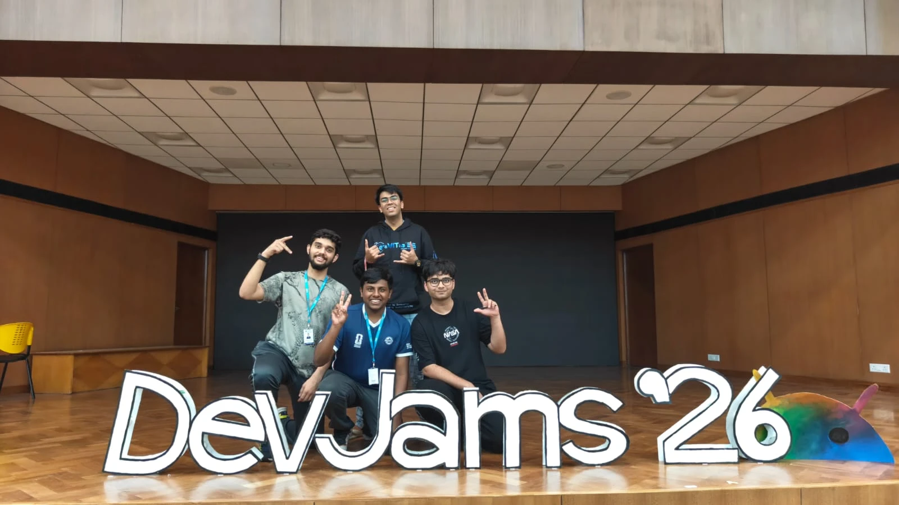

Cybersecurity
Understanding threats.
Building safer systems.
Learning to build.
Building to protect.
I’m Jonathan, a first-year Computer Science (Cybersecurity) student exploring the intersection of secure software, practical programming and digital trust.
I am a first-year B.Tech student in Computer Science and Engineering, specializing in Cybersecurity at VIT Vellore. My interests span secure software development, practical programming and understanding how digital systems can be made safer.
I want to develop the foundation to investigate vulnerabilities, build useful security tools and work in cybersecurity — combining governance, risk and compliance with hands-on security engineering. This site documents what I have learned and what I’m still working to improve.
Understanding threats.
Building safer systems.
Python, C++ and databases.
Learning through making.
Exploring GRC, networking
and responsible technology.
Real problems. Collaborative thinking.
A growing body of work.

TEAM SECUREFORGE / 2026LinXray team — DevJams 2026
A collaborative project exploring how suspicious URLs can be examined in a controlled environment. My contribution focuses on testing and isolation: validating behavior, sandbox safety, evidence handling and troubleshooting.
Proposed workflow. Implementation, API integration and testing are ongoing; security efficacy is not independently validated.
View LinXray on GitHub ↗A Python-and-SQLite application for recording expenses, organizing spending by category, comparing monthly budgets and generating visual reports. My work included database-related logic and the calculations supporting budgeting insights.
View Personal Finance Manager on GitHub ↗From mathematical reasoning
to code and communication.
Mathematical modelling, rates of change and differential equations.
Connecting abstract mathematics to real systems, including malware propagation.
Functions, reusable code, decomposition and programming foundations in Python and C++.
Turning complex problems into manageable parts and improving code through debugging.
Clear writing, audience awareness and technical storytelling.
Explaining complex ideas through group work, including The Stuxnet Files: A Team 7 Saga.
Evidence of learning.
Mathematics, writing and explanation.
Mathematical Modeling of Malware Spread Using the SIR Model applies differential equations to susceptible, infected and recovered populations in connected systems. It connects engineering mathematics with cybersecurity through modelling and graph interpretation.
View Original Maths Presentation ↗A review of Amish Tripathi’s novel, exploring cinematic narration, pacing, battle sequences, humour and character depth. A sample of concise critical writing, literary evaluation and persuasive language.
B.Tech CSE (Cybersecurity)
VIT Vellore
First-year computer science student interested in cybersecurity, secure application development and GRC; experience with Python, databases, collaborative testing and technical communication.
Email Jonathan ↗LinkedIn ↗GitHub ↗B.Tech, CSE (Cybersecurity) · Started July 2026
97% overall · Mathematics 97 · Computer Science 98
Physics 92 · Chemistry 98
Completed
Collaborative suspicious-link analysis application.
Database logic, monthly calculations and expenditure reporting.
Python · C++ coursework · SQLite · SQL fundamentals · Git/GitHub · Debugging · Testing · Security fundamentals · Technical presentations
Exploring GRC, Linux, networking and secure development.
Off-screen: basketball.